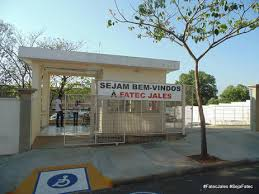

Olá bem vindo ao meu Blog
Olá meu nome é Douglas Donizeti Gonçalves dos Santos e esse é meu Blog.
Fatec Jales
A Faculdade de Tecnologia de Jales (Fatec Jales) foi criada pelo Decreto nº 52.122 de 03 de setembro de 2007 publicado no D.O.E de 04 de setembro de 2007. Ela pertence ao Centro Estadual de Educação Tecnológico “Paula Souza” – CEETEPS, o qual é uma autarquia vinculada à Secretaria do Desenvolvimento Econômico, Ciência, Tecnologia e Inovação do Estado de São Paulo. O CEETEPS é responsável pela educação profissional pública nos níveis básico, técnico e tecnológico.
A Fatec Jales iniciou suas atividades em 10 de setembro de 2007, instalada em espaço concedido à Secretaria do Desenvolvimento Econômico, Ciência, Tecnologia e Inovação pela Secretaria da Educação, de acordo com Decreto 51.068 de 24 de agosto de 2006.
A Fatec Jales oferece três cursos Superiores de Tecnologia, sendo o primeiro deles o curso de Tecnologia em Agronegócio, iniciado no 2º semestre de 2007, com 80 vagas semestrais, sendo 40 no período matutino e 40 no período noturno, o segundo curso de Tecnologia em Sistemas para Internet, iniciado no 1º semestre de 2010, com 70 vagas semestrais, sendo 35 no período matutino e 35 no período noturno e o terceiro curso de Tecnologia em Gestão Empresarial, iniciado no 2º semestre de 2014, com 40 vagas no período noturno. Os cursos seguem o regime de seriado semestral. O prazo de integralização é de seis semestres, enquanto o máximo é de dez semestres.
A Fatec Jales está instalada em área de aproximadamente 10.000 m², dos quais pouco menos da metade construídos com salas de aula, multimídia, laboratórios, salas de uso múltiplo, biblioteca e outros.
A cidade de Jales, situada na região noroeste do estado de São Paulo, estrategicamente localizada, está próxima dos estados de Goiás, Mato Grosso do Sul, Mato Grosso e Minas Gerais. Considerada pólo regional, possui uma população total de 48.786 mil habitantes. O município de Jales é um dos centros dinâmicos dos 22 municípios da região, sobre os quais exerce forte influência do ponto de vista do oferecimento de serviços como educação e saúde. A Fatec Jales sendo uma de suas Instituições de Ensino contribui de tal forma que possui alunos das seguintes cidades: Aparecida D’ Oeste, Araçatuba, Catanduva, Chapadão do Sul - MS, Dirce Reis, Dolcinópolis, Estrela D’ Oeste, Fernandópolis, Ilha Solteira, Iturama - MG, Jales, Marinópolis, Mesópolis, Novo Horizonte, Palmeira D’ Oeste, Paranapuã, Pontalinda, Santa Albertina, Santa Fé do Sul, Santa Salete, São Francisco, Sud Mennucci, Urânia, Vitória Brasil, entre outras.